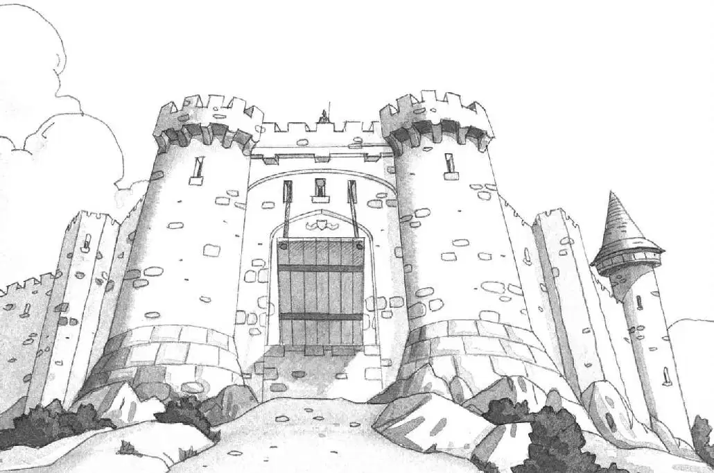
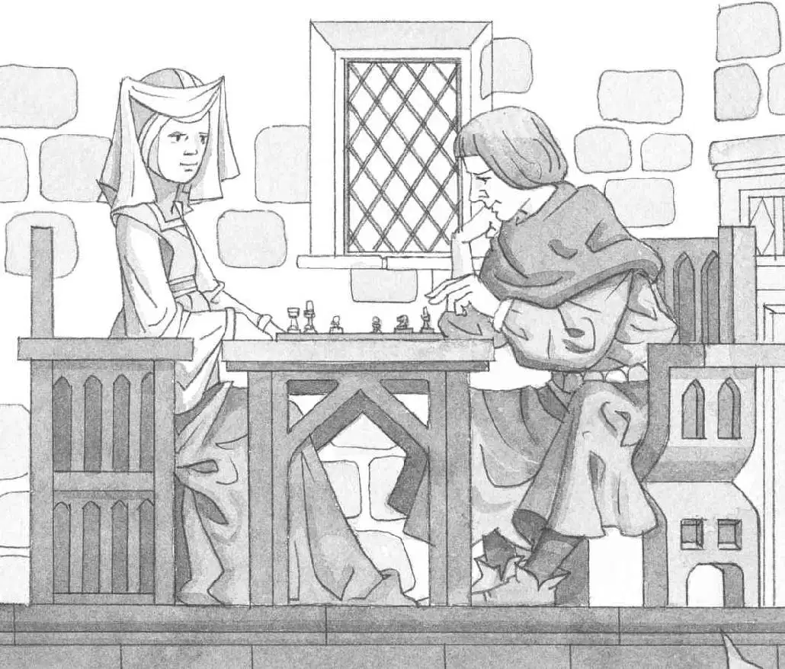
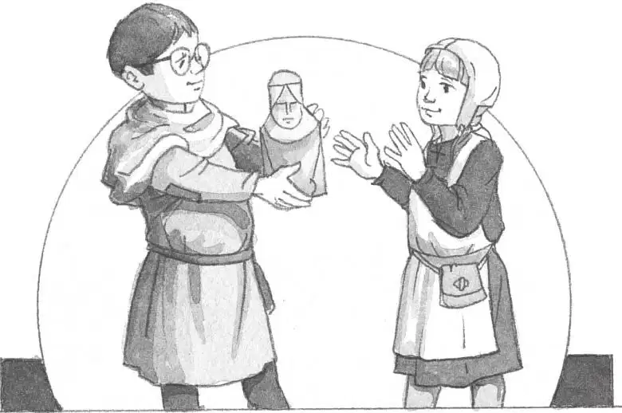

1.中世纪是欧洲历史上的一个时代，从公元5世纪持续到公元15世纪。这段时间是欧洲古代和现代的分水岭，所以被称作中世纪，也叫作中古时代。（中古在拉丁文中的意思为“中间的时间”）
2.城堡是封建制度中十分重要的一部分。它能够抵御外敌入侵，保护领主和领主的土地。从11世纪开始，欧洲就掀起了修城堡的热潮，到中世纪末期，欧洲大陆上已经建成了12000多座大大小小的城堡。

3.在遇到节日和其他特殊场合的时候，城堡里会举办宴会。客人吃着饭，听着美妙的音乐，欣赏着弄臣和杂技演员的表演，开心极了。宴会时最忙碌的人大概就是厨师了，他们夜以继日地工作，为客人献上有特色的食物。有时候，他们会做烤孔雀，并在旁边装饰上孔雀美丽的羽毛。有时他们会把天鹅的嘴涂成金色，然后再端上餐桌。
4.中世纪的游吟诗人经常会吟唱一些英雄事迹和他们的冒险经历。他们故事中的英雄既勇敢又无私，这些英雄就是中世纪的骑士。想要成为一名骑士可不容易，需要接受大量的训练，当然也要花很多钱，所以大部分的骑士都来自富有的贵族家庭。

5.在中世纪晚期的骑士册封仪式上，骑士需要宣誓永远保持优良的作风。他们要公正公平、保护弱者、慷慨无私、尊重女性。
